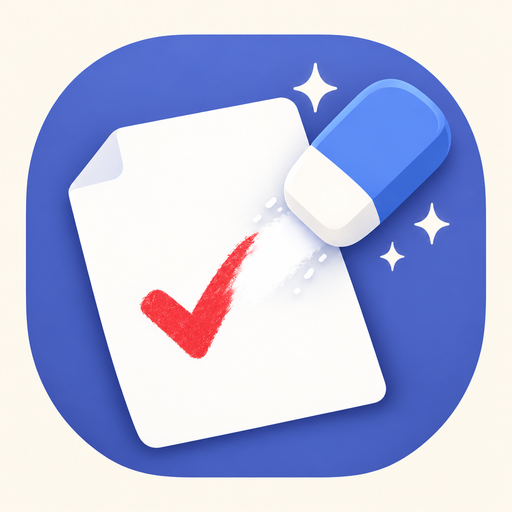

プリント消しゴム不具合のご報告やご要望は、次のメールアドレスまでお送りください。
お送りいただく際は、次の情報があると調査がスムーズです。
Q. 子どものテスト画像がサーバーに送られませんか？
はい。画像処理はすべてiPhone端末内のGPUで完結するため、外部サーバーには一切送信されません。
Q. 自宅にプリンターがなくても印刷できますか？
はい。「PDFで保存・共有」からPDFファイルを書き出せるので、コンビニのマルチコピー機アプリ等に渡してA4印刷できます。
Q. 広告を消す・出力制限をなくすには？
アプリ内のプレミアム（¥600買い切り）を購入すると広告が非表示になり、PDF出力が1日何枚でも無制限になります。